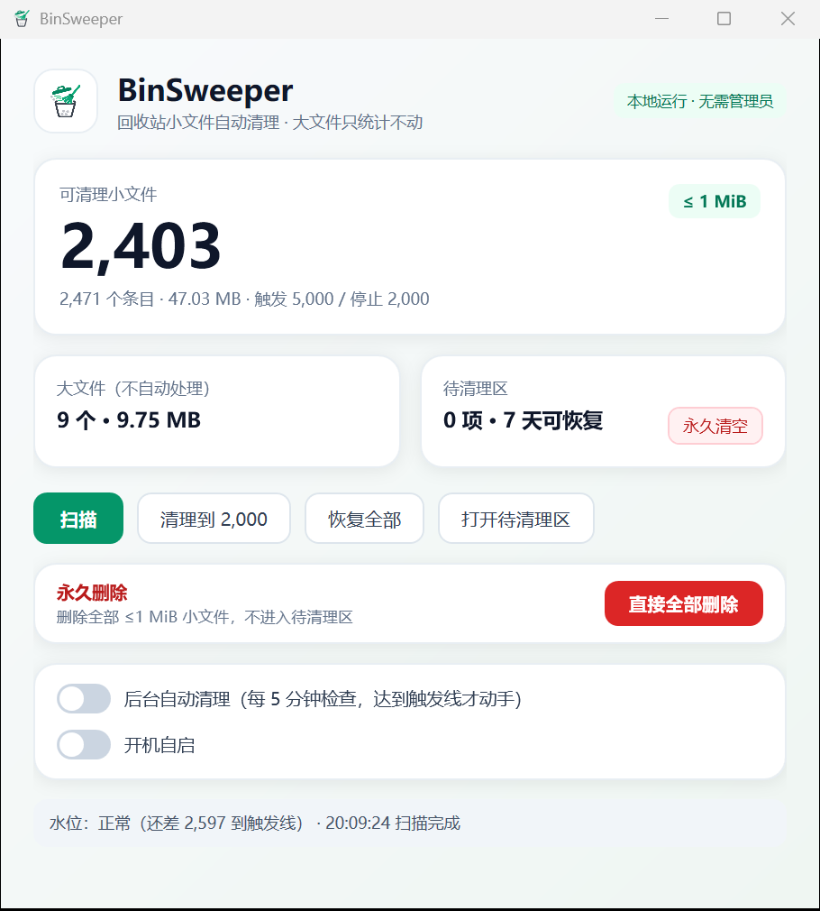

回收站塞满几十万个小文件，
一打开就卡死。
BinSweeper 只做一件事：把回收站里 ≤ 1 MiB 的小文件安全地移出去，让条目数量回到可用范围。大文件一个都不碰，混合目录整目录跳过，移走的内容 7 天内随时可以放回。

只按大小分流，不赌你的数据
通用清理软件往往扫描全盘、规则不透明。BinSweeper 的边界很小：只处理当前用户回收站里的小文件，其他一律不碰。
只清小文件
默认只处理 ≤ 1 MiB 的条目，界值可通过 --small-limit 64KB 调低，越保守越安全。
大文件零处理
大于界值的文件只统计数量和占用，永远不会被自动移动或删除。
混合目录整目录跳过
目录里只要包含大文件，整个目录都不碰，避免误伤你留着手动处理的内容。
两阶段安全模型
先同卷 rename 进待清理区，可一键放回回收站；物理删除永远由你手动触发。
同卷 rename，不复制
移动几万个文件也只更新目录项，不重写内容，速度和磁盘占用都可控。
本地、离线、无管理员
只读取你自己的回收站，不上传文件名、不联网、不需要管理员权限。
一次清理，只做三件事
扫描 → 分级 → 搬运。恢复是反向操作，永久删除是唯一不可逆的动作，而且必须由你确认。
只读盘点
定位每个固定磁盘的 $Recycle.Bin\<SID>，解析 $I 元数据并与 $R 内容配对，统计目录内部的小文件。
四类条目
可清理小文件 / 大文件 / 混合目录 / 未知。只有第一类进入候选，其余全部保持原样。
可恢复优先
成对 rename 到 %LOCALAPPDATA%\BinSweeper\staging。失败会回滚，恢复会原样放回。
为什么不用「全选删除」或「一键清空」
| 做法 | 结果 |
|---|---|
| 按大小排序，手动挑小文件 | 几万条起，鼠标点不过来 |
| 直接清空回收站 | 大文件和还想留的文件一起没了 |
| 通用清理软件 | 扫全盘、要管理员、规则不透明，还可能捆绑 |
| BinSweeper | 只按大小分流，先隔离后删除，大文件不动，可恢复 |
常见问题
会不会把我重要的文件删掉？
不会自动删除任何大文件；小文件也只是先移入待清理区，不会立刻物理删除。真正的删除只有两个入口：你手动点「直接全部删除」，或你手动点「永久清空待清理区」。
为什么只处理 ≤ 1 MiB 的小文件？
回收站卡顿的根因通常是条目数量，而不是总体积。几十万个小文件会让资源管理器逐条读取元数据；清理小文件能最快把条目数降下来，同时把误删大文件的风险降到最低。
待清理区的文件在哪里？还能找回来吗？
默认在 %LOCALAPPDATA%\BinSweeper\staging。点「恢复全部」或执行 binsweeper restore all，条目会原样放回回收站，之后仍可在资源管理器里还原到原位置。
需要管理员权限吗？会上传数据吗？
不需要管理员。程序只读取当前用户自己的回收站，完全离线运行，不上传任何文件或文件名。
支持 Windows 7 吗？
不支持。项目基于 .NET 10 和 WPF，最低要求 Windows 10 1607 及以上。
让回收站从「卡死」变回「能用」
单文件、免安装、开源 MIT。如果它帮到了你，欢迎在 GitHub 点一个 Star。
BinSweeper is an open-source Windows Recycle Bin cleaner that only removes files ≤ 1 MiB. Large files are never touched, and every moved item can be restored.